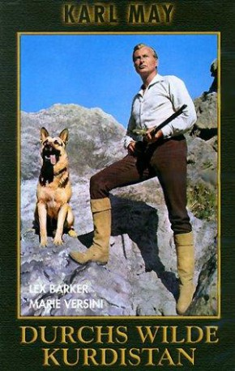
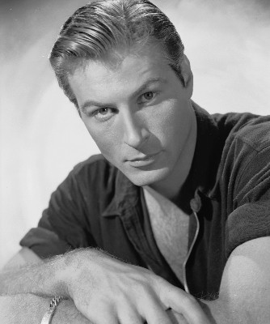
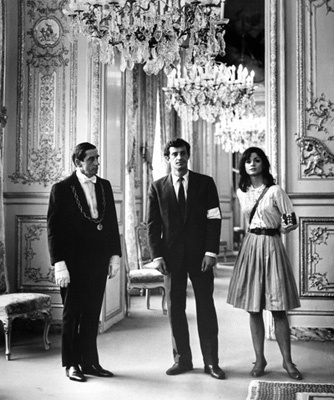
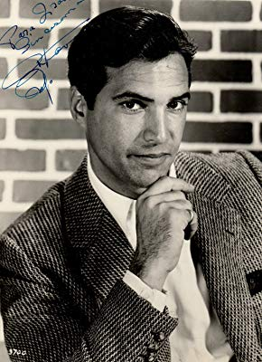
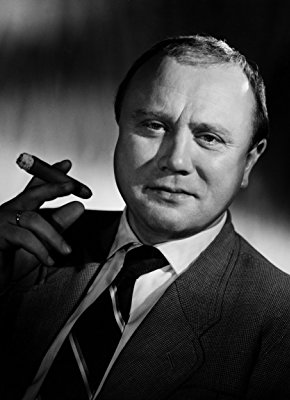
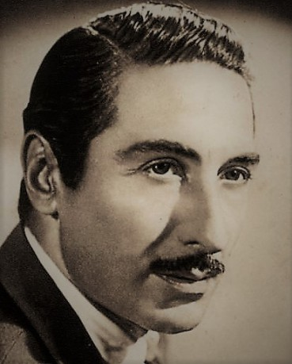
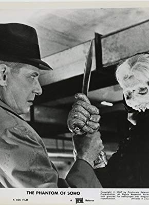
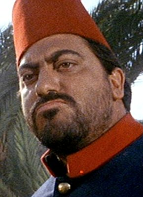

#377 Karl May 10 - Durchs wilde Kurdistan
Alternativ: Wild Kurdistan (Englischer Titel)
 
 IMDB-Wertung: 5.8 / 10
IMDB-Wertung: 5.8 / 10  Metascore: 0
Metascore: 0 
After dealing with the Shut in the Balkans, Kara Ben-Nemsi ('Karl the German') receives a firman (precious passport) from the padishah (Ottoman sultan) before he continues his travels through Kurdistan. Achmed El Corda, the son of Halef's Hadedhin Beduin tribe's sheik Mohammed Emin, has been captured by the machredsh (Turkish governor) of Mossul for resisting water seizure by his Turkish troops. Kara takes charge of the rescue. On their way, they help eccentric Lord David Lindsay and his butler Archie, who gallantly try to rescue an Oriental lady, as well as pir ('holy man') Kamek's sun-devoted Yessidi sect.
Jahr: 1965
Dauer: 95 Minuten
FSK: 6
Land: Spanien Studio: GloriaTonspuren:
Untertitel:
Auflösung: 1080p (1920x816) Größe: 6717 MB
Genre: Abenteuer
Regisseur: Franz Josef Gottlieb
Drehbuch: Karl May, Franz Josef Gottlieb
Soundtrack: Mordechei Olari-Nozyk, Raimund Rosenberger, Gerard Muller, Armand Seguin
Darsteller:
-  Lex Barker als Kara Ben Nemsi
-  Marie Versini als Ingdscha
- Ralf Wolter als Hadschi Halef Omar
- Djordje Nenadovic als Machredsch of Mosul
-  Gustavo Rojo als Ahmed El Corda
-  Werner Peters als Mütesselin
- Charles Fawcett als Scheik Mohammed Emin / Scheik Kadir Bei
- Wolfgang Lukschy als Ali Bei
- Gloria Cámara als Benda
 Fernando Sancho als Padischah
Fernando Sancho als Padischah- José María Caffarel als
-  José Nieto als Pir Kamek
 Antonio Casas als Scheik Cedar
Antonio Casas als Scheik Cedar- Maite Matalonga als Hanneh
-  Dieter Borsche als Sir David Lindsay
- Chris Howland als Archibald
- Pablito Alonso als Boy , uncredited
- Francisco Bravo als Miralai Omar Ahmed , uncredited
- Juan Cazalilla als Lieutenant , uncredited
-  Tito García als Sergeant , uncredited
- Soraya Hussein als Solo dancer , uncredited
- Antonio Iranzo als Durek , uncredited
- Milo Quesada als Miralai , uncredited
- Kurt Waitzmann als Ingdscha's brother , uncredited
Datei: X:\Person\Karl May\Karl May 10 - Durchs wilde Kurdistan (1965, FSK6, 1920x816).mkv seit 20.02.2015
Festplatte: HD Collection-7+mehr(A-Z)+Person
 Es gibt insgesamt 20 Filme in der Gruppe 'Person\Karl May'
Es gibt insgesamt 20 Filme in der Gruppe 'Person\Karl May'